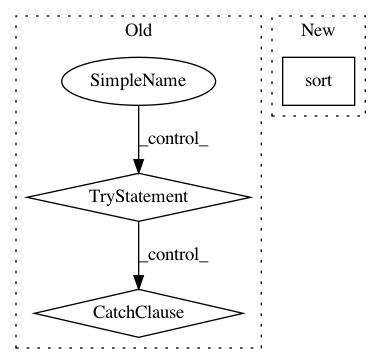

daf0cbe9f0047ae7070491ab98479461b31981d2,hicexplorer/chicSignificantInteractions.py,,main,#Any#,321
Before Change
if exc.errno != errno.EEXIST:
raise
if not os.path.exists(args.interactionFileFolderOutput):
try:
os.makedirs(args.interactionFileFolderOutput)
except OSError as exc: // Guard against race condition
if exc.errno != errno.EEXIST:
raise
viewpointObj = Viewpoint()
outfile_names = []
outfile_names_adjusted = []
After Change
header += "// Used p-value: "
header += str(args.pValue)
header += "\n//\n"
a.sort().merge(d=1000).saveas(args.targetListName, trackline=header)
// targetListFile.write(header)
In pattern: SUPERPATTERN
Frequency: 3
Non-data size: 3
Instances
Project Name: deeptools/HiCExplorer
Commit Name: daf0cbe9f0047ae7070491ab98479461b31981d2
Time: 2019-07-21
Author: wolffj@informatik.uni-freiburg.de
File Name: hicexplorer/chicSignificantInteractions.py
Class Name:
Method Name: main
Project Name: nilmtk/nilmtk
Commit Name: 72f3f5bf50ed2d91cdcfbe2cf47120a2df8883cd
Time: 2014-11-26
Author: jack-list@xlk.org.uk
File Name: nilmtk/elecmeter.py
Class Name: ElecMeter
Method Name: _get_stat_from_cache_or_compute
Project Name: nipy/dipy
Commit Name: 61714567a844ab36f14385061b60ae1a08def1b5
Time: 2015-11-08
Author: garyfallidis@gmail.com
File Name: dipy/reconst/dsi.py
Class Name:
Method Name: create_qtable